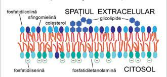
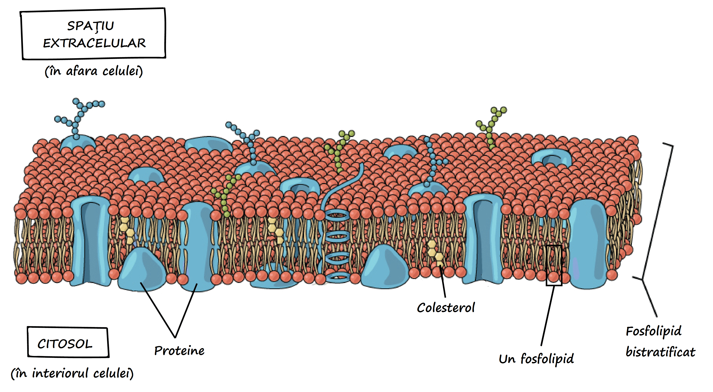
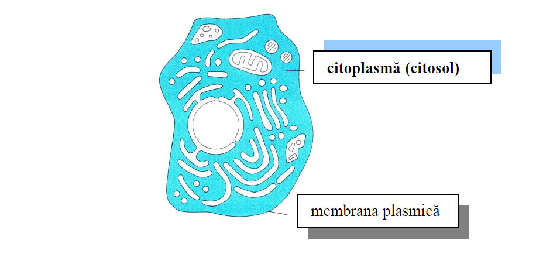

Membrana celulară (plasmalema) este formată dintr-un bistrat de fosfolipide în care sunt dispersate molecule proteice. Aceste molecule se pot mişca liber în bistratul lipidic, ceea ce a atras denumirea de modelul „mozaicului fluid” pentru descrierea structurii membranei celulare. Cele două componente majore ale membranei plasmatice, proteinele şi fosfolipidele sunt cele care permit sau nu ca o substanţă să intre sau să iasă din celulă. Astfel, substanţele liposolubile vor trece direct prin bistratul lipidic, în timp ce substanţele hidrosolubile vor traversa membrana prin intermediul proteinelor membranare. Fosfolipidele şi proteinele membranare îi conferă membranei proprietatea de permeabilitate selectivă, adică unele substanţe pot trece prin membrană, în timp ce altele nu.
|  |
|
 |
Citoplasma este masa celulară fundamentală situata între nucleu şi membrană. Este un sistem coloidal în care mediul de dispersie este apa iar faza dispersată este ansamblul de micelii coloidale ce se gasesc în mişcare browniană. În funcţie de gradul de organizare se disting 2 componente: Citoplasma fundamentală = hialoplasma = citosol – reprezentata de o solutie fluida sau gelatinoasa în care se gasesc în suspensie celelalte structuri citoplasmatice; în hialoplasma exista o retea de filamente proteice = citoschelet care asigura forma celulei si miscarea ordonata a celorlalte componente celulare. Citoplasma structurala – reprezentata de organite (=organele) celulare – structuri diferentiate ale citoplasmei care îndeplinesc diverse functii în cadrul celulei. Acestea sunt de doua tipuri: comune tuturor celulelor si specifice, prezente numai in anumite celule, unde indeplinesc functii speciale.
